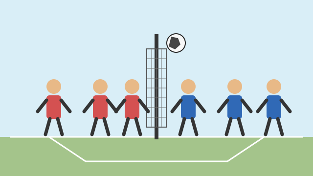

Aprende a jugar
Conoce las reglas básicas y las funciones de los integrantes del equipo.
Un sitio educativo sobre este deporte tradicional del Ecuador.
El ecuavóley es una variante del voleibol practicada especialmente en Ecuador. Es un deporte de equipo en el que la coordinación y la comunicación son fundamentales.
En este sitio aprenderás sobre su historia, sus reglas, las posiciones de los jugadores y algunas características de la cancha.

Conoce las reglas básicas y las funciones de los integrantes del equipo.
Explora la historia de un deporte que forma parte de la vida comunitaria ecuatoriana.